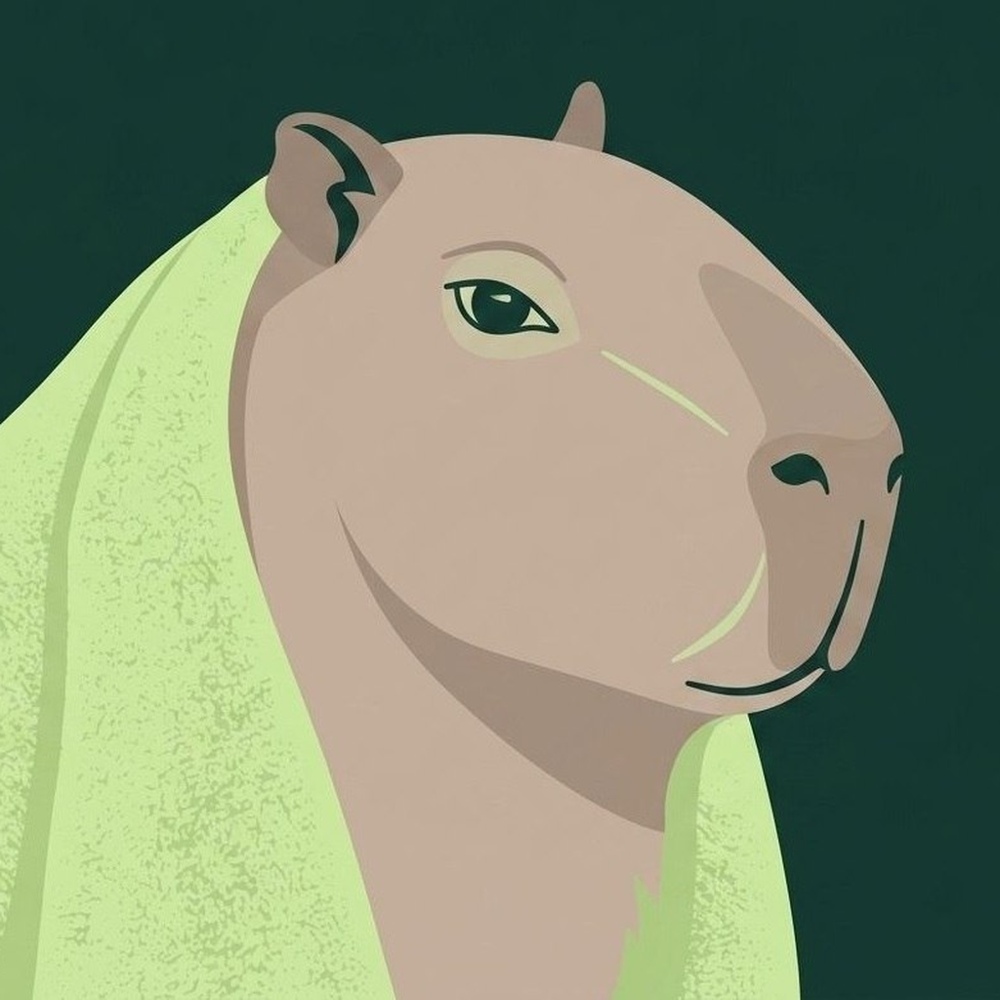
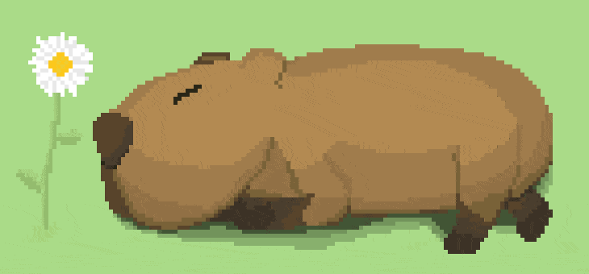

FOCAPY
SESSÃO DE HOJE
Vivencie o seu tempo

PRONTO PARA CULTIVAR
“Um passo de cada vez.”
25:00
Escolha o ritmo
Nova categoria
INVENTÁRIO
O que você conquistou com seu foco
0minutos cultivados
0sessões concluídas
0itens guardados
MEMÓRIA DA COLEÇÃO
Coleção
Cada mês guarda a coleção que você conquistou. Toque em um mês para revisitar seus itens.
Escolha um mês no calendário.
RITMO
Consistência, não pressão.
Meta diária
0 minde 60 min
Últimas sessões
Frases motivacionais
SEU FOCO EM NÚMEROS
Estatísticas
Acompanhe seu tempo cultivado e descubra em que você tem investido sua atenção.
0 mintempo focado
0sessões
Tempo de foco
DiárioFoco por categoria
Diário0 min
Por categoria
minutos| Categoria | Tempo | Sessões |
|---|
PLANEJAMENTO
Lista de tarefas
Marque as tarefas que quer associar à sua próxima sessão de foco.
Nova categoria
Histórico de tarefas
Focos concluídos ficam registrados com duração, data e categorias associadas.